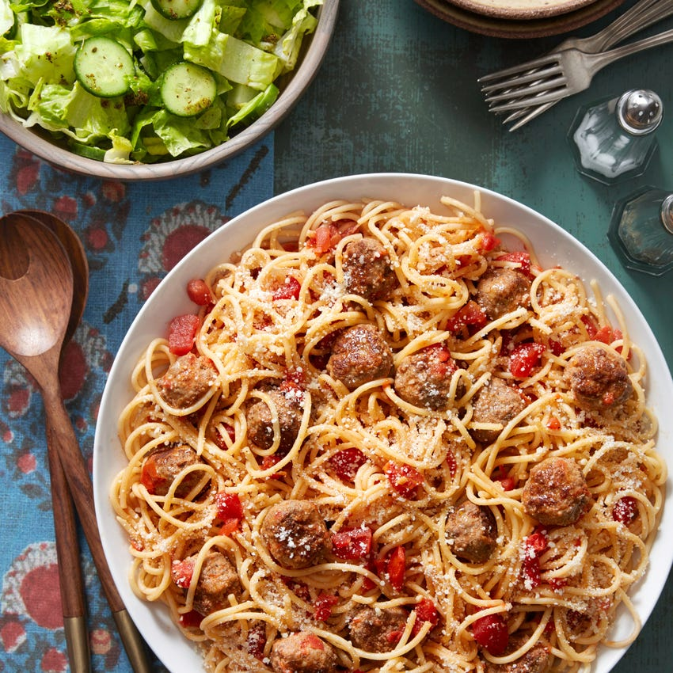

This is basically ripped striaght from the blue apron cookbook.
Ingredients
- 1⅛ lbs Ground Beef
- ¾ lb Whole Wheat Spaghetti Pasta
- 1 28-Ounce Can Tomato Purée
- ½ cup Panko Breadcrumbs
- 5 oz Arugula
- 2 Carrots
- 1 Tangelo
- 1 Yellow Onion
- 1 large bunch Parsley
- 1 Tbsp Meatball Spice Blend (Whole Fennel Seeds, Dried Oregano, Dried Thyme, Garlic Powder, Ground Coriander & Smoked Paprika)
- ½ cup Grated Parmesan Cheese
- ¼ cup Sliced Almonds
Prepare the ingredients:
Wash and dry the fresh produce. Heat a large pot of salted water to boiling on high.
Peel and small dice the carrots. Peel and medium dice the tangelo; remove the seeds.
Peel and small dice the onion. Pick the parsley leaves off the stems; discard the stems and
roughly chop half the leaves, keeping the remaining leaves whole.
Cook the aromatics:
In a medium pan (nonstick, if you have one), heat 1 tablespoon of olive oil on medium until hot.
Add half the carrots and half the onion; season with salt. Cook, stirring occasionally,
2 to 3 minutes, or until softened. Add the spice blend.
Cook, stirring frequently, 2 to 3 minutes, or until fragrant.
Transfer the cooked aromatics to a plate and spread into a thin layer to cool.
Wipe out the pan.
Make the sauce:
While the aromatics cool, in a large pot, heat 1 tablespoon of olive oil on medium until hot.
Add the remaining carrots and onion; season with salt and pepper. Cook, stirring occasionally,
3 to 4 minutes, or until softened. Add the tomato purée and 1 cup of water; season with salt and pepper.
Heat to boiling on high. Once boiling, reduce the heat to low. Simmer, stirring occasionally, 6 to 8 minutes,
or until the liquid is slightly reduced in volume.
Remove from heat. Set aside in a warm place.
Make the meatballs & add them to the sauce:
While the sauce simmers and once the aromatics are cool enough to handle, in a large bowl,
combine the ground beef, breadcrumbs, chopped parsley, cooked aromatics and half the Parmesan cheese;
season with salt. Using your hands, form the mixture into 19 to 21 meatballs (each about the size of a golf ball).
In the pan used to cook the aromatics, heat 1 tablespoon of olive oil on medium until hot. Add the meatballs in a
single layer and cook, stirring occasionally, 8 to 10 minutes, or until evenly browned; transfer to the pot of sauce.
Simmer the meatballs and sauce on low, stirring occasionally, 4 to 6 minutes, or until the meatballs are cooked through.
Remove from heat. Set aside in a warm place.
Cook the pasta:
While the meatballs and sauce simmer, add the pasta to the pot of boiling water.
Cook, stirring frequently, 9 to 11 minutes, or until al dente (still slightly firm to the bite).
Drain the pasta thoroughly and return to the pot. Drizzle with olive oil and toss to coat.
Set aside in a warm place.
Make the salad & serve your dish:
In a large bowl, combine the arugula, tangelo, almonds and half the remaining Parmesan cheese.
Drizzle with olive oil and toss to coat; season with salt and pepper to taste.
Transfer the salad to a serving dish. Transfer the cooked pasta to a separate serving dish;
spoon the meatballs and sauce over the pasta. Garnish with the whole parsley leaves and remaining Parmesan cheese.
Enjoy!